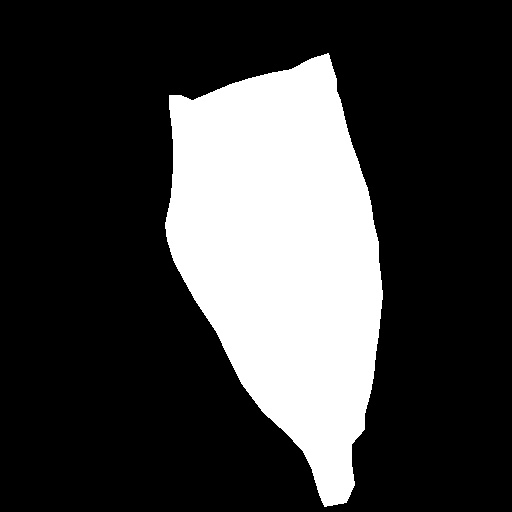

Udvalgte Projekter / Selected Projects

Simulering med Navier-Stokes
Et bachelorprojekt hvor jeg brugte Python og FENICS til at modellere advektions-reaktions-diffusion.
A bachelor project using Python and FENICS for modeling advection-reaction-diffusion.
Machine Learning og DMD
Specialeprojekt om dynamiske systemer og data-drevet modellering af proteinbevægelser i celler.
Master's thesis on dynamic systems and data-driven modeling of protein motion in cells.